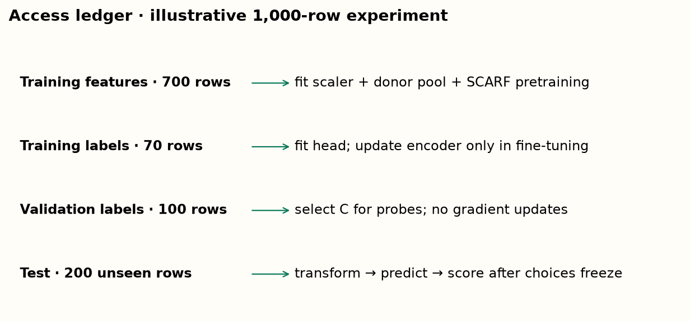
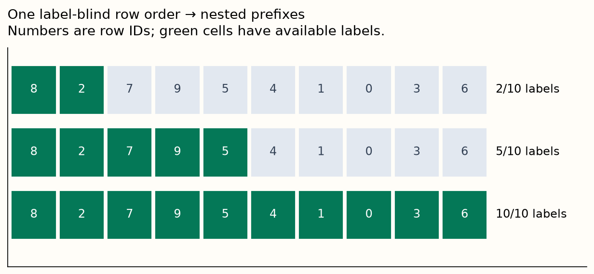
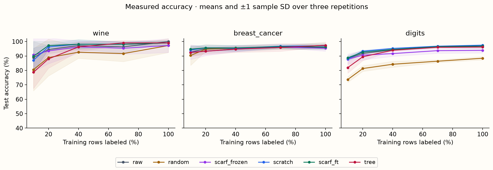
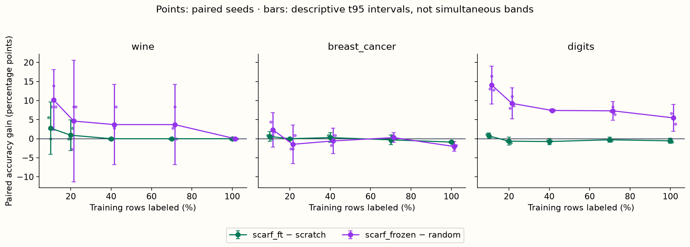
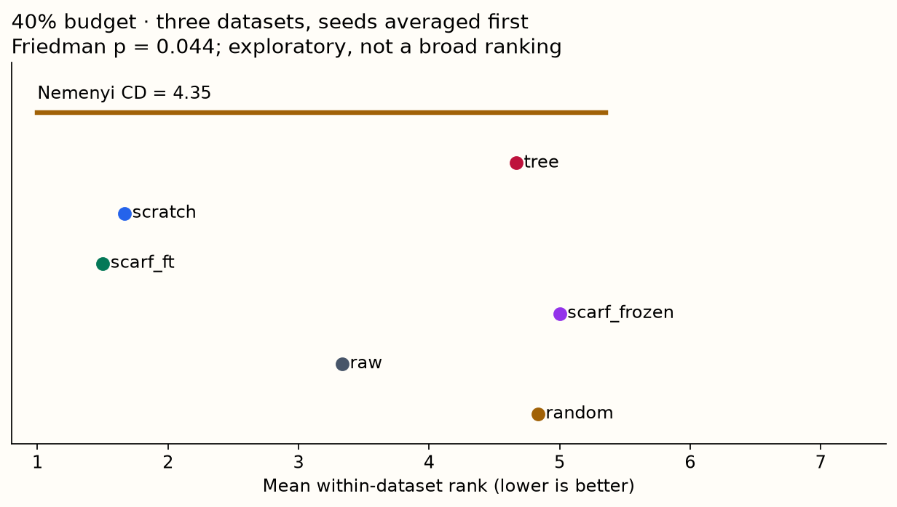

Year 2 · Quarter 4 · Lesson 073
When SSL actually helps
Match the comparison → account for labels → measure the curve → audit the crossover.
Start with retrieval¶
Without reopening Lesson 72, write three answers: What does SCARF predict during pretraining? Which parameters move in a frozen probe? Can unlabeled test rows enter an inductive training pipeline? Then complete the spaced warm-up.
Your tangible win: build a fair label-budget curve, compute paired gains, and explain whether the measured grid contains a crossover. Finishing the notebook is not the same as demonstrating that explanation.
Lesson 71 introduced learning by repairing corrupted rows. Lesson 72 introduced learning by recognizing companion views. Here the question changes: when does that additional training help the prediction task? This is an experimental-design lesson; it introduces no new model.
1 · Turn “helps” into a comparison¶
In plain terms. A representation can learn something without becoming your best predictor. Name the alternative before declaring success.
Self-supervised learning creates training targets from features rather than human annotations. In SCARF, a clean row identifies its corrupted companion among a batch of candidates. Semi-supervised learning uses both labeled and unlabeled examples for a prediction task. Self-supervised pretraining followed by supervised learning is one way to work in that setting. The abbreviation SSL has been used for both; here it means self-supervision unless stated otherwise.
The tabular SSL survey, §§2–5 organizes predictive, contrastive, hybrid and transfer approaches. Those categories describe how a representation is learned. They do not supply a universal label fraction at which it becomes useful.
A frozen probe holds the encoder fixed and trains a classifier on its representations. Fine-tuning updates the encoder as well as the new classification head. Training from scratch starts the same encoder from its original random weights. The SCARF paper, Figure 1 and §3 discards its projection head and fine-tunes the encoder and classification head. Our preceding frozen-probe lab measured a different transfer procedure.
| Question | Treatment minus control | What the difference contains |
|---|---|---|
| Did pretraining improve the supervised network? | SCARF fine-tuned − scratch | Pretraining, including its extra computation |
| Did the learned frozen representation help? | SCARF frozen − random frozen | Representation learning under a linear probe |
| Is it a useful prediction recipe here? | SCARF fine-tuned − raw logistic / tree | Architecture, optimization and representation differences |
The primary comparison is fixed before seeing results: SCARF fine-tuned minus scratch. It matches encoder architecture, head initialization, supervised batches, learning rate and epoch count. It does not match total compute: pretraining adds work. The practical controls are a raw-feature logistic classifier and a fixed histogram gradient-boosted tree model. They are useful local checks, not exhaustively tuned champions.
Predict. Could SCARF beat random frozen features yet lose to the raw inputs? Explain how information discarded by the encoder could produce that outcome.
2 · Draw the information boundary before training¶
In plain terms. Labels are scarce; held-out examples still stay held out.
Split row IDs once into training (about 70%), validation (about 10%) and test (about 20%). A validation set supports model choices. The test set estimates the final recipe after those choices. An inductive experiment predicts future unseen rows; a transductive experiment permits using the unlabeled evaluation rows during training. This lab is inductive.

The feature scaler learns means and variances from the entire training pool. SCARF donors and pretraining batches come from that pool too. No validation or test feature contributes to a fitted transformation. A frozen probe fits a second scaler using only its labeled training representations. Its regularization strength is selected from C = 0.1, 1, 10 by validation accuracy, with the first candidate winning a tie. All other recipes have fixed hyperparameters and epoch counts.
Subtle boundary. All recipes receive the same train-pool feature scaling, including the scratch baseline. Therefore the primary difference isolates SCARF pretraining on top of shared preprocessing. It does not compare access to all unlabeled information versus access to none.
The benchmark's outer splits are stratified: class proportions guide assignment, using existing benchmark labels. Within the training split, label acquisition is blind to the label values. We assume the list of possible classes is known. This is an offline benchmark simulation, not a claim that a deployed annotation system knows hidden labels.
3 · Make the label budgets nested and count them honestly¶
A label fraction f is the fraction of training-pool rows whose target is available to the supervised learner. Our grid is 10%, 20%, 40%, 70%, 100%. The training feature pool stays fixed as f changes. At 100%, self-supervision still adds an objective, even though it adds no extra training rows beyond those with labels.
A nested subset preserves every row from the smaller budget. Shuffle training IDs once without reading their labels; take successively longer prefixes. Independently sampling each budget would mix the effect of more labels with replacing the labeled examples. Nesting reduces this avoidable variation; it does not make adjacent budgets independent.

Worked example. There are 700 training rows, 100 validation rows and 200 test rows. At f = 0.1, the learner uses 70 training labels. Model development has access to 70 + 100 = 170 labels. That is 21.25% of the 800 development rows, not 10%. The 200 test labels are evaluation annotations and must be accounted for separately if collecting this dataset costs money.
The training count is floor(f × training rows). Flooring means actual fractions can differ slightly from nominal ones. A very small blind sample can omit a class. The lab does not search seeds to repair an inconvenient sample; a one-class logistic training set raises an explicit error. Missing classes should be reported as part of the regime, or addressed by an annotation policy defined before evaluation.
Prediction before moving the control: if validation labels remain fixed, does halving f halve the total development-label cost? Keep the original 10% case as your reference.
Oliver et al., §4.6 and §5 examine validation-set realism and matched baselines in semi-supervised evaluation. Their image experiments motivate this audit; they do not establish a numerical tabular crossover. Here all arms have the same available validation budget, although fixed recipes do not use it to select parameters. We report available labels rather than pretending every method consumed them in the same way.
4 · Subtract within a seed before averaging¶
In plain terms. Compare two runners on the same course before averaging their finishing times.
A paired repetition uses the same outer split, labeled subset and relevant random initialization in both arms. Our seed controls a split and model initialization together. Three repetitions therefore mix split and training variation; they do not separate those sources of uncertainty.
Worked example. At one budget, treatment accuracy is [0.80, 0.72, 0.90] and control accuracy is [0.75, 0.74, 0.86], ordered by the same seed IDs. Pairwise differences are [+0.05, −0.02, +0.04]. Their mean is +0.0233, or +2.33 percentage points. This is not a 2.33% relative improvement.
Accuracy A is the proportion of test rows classified correctly. For repetition s, define g(s,f) = A(treatment,s,f) − A(control,s,f). The mean gain is the sum of the S paired gains divided by S. Join results by seed ID; their storage order can differ.
Uncertainty. The sample standard deviation describes the spread of repetition results. The displayed paired t interval is mean gain ± t(0.975,S−1) × SD(g)/sqrt(S). With three gains in the worked example, SD is about 0.0379 and the interval is about [−7.07, +11.74] percentage points. A positive average can coexist with large uncertainty.
Scope check. Our t intervals are descriptive sensitivity summaries over three repetitions of overlapping finite datasets. They do not provide independent-dataset evidence, account for all test-sampling uncertainty, or give simultaneous 95% coverage over the five budgets. More seeds cannot replace more independent datasets.
5 · A crossover is a result, not a required ending¶
A crossover bracket here means adjacent tested fractions with strictly opposite mean-gain signs. This operational definition reports where the sampled recipe ordering reverses. It does not estimate an exact threshold between fractions.
Worked example. Gains [+3, +1, −2, −1, −3] percentage points at fractions [0.1, 0.2, 0.4, 0.7, 1.0] give a bracket [0.2, 0.4]. The reverse transition is also a sign reversal. A curve may have several; return all of them. Exact zeros are observed ties and are reported separately. All-positive or all-negative means contain no strict adjacent crossing. That does not prove the underlying population curves never cross.
Do not smooth a curve until it tells the preferred story. Do not use a test-derived crossing to choose your deployment method and then claim that same test as independent confirmation. Freeze the follow-up choice and evaluate it on fresh data or within an outer evaluation protocol.
6 · Run the fixed experiment and read what happened¶
Held fixed: train feature pool, split IDs, nested label order, architecture within each matched comparison, 40 SCARF pretraining epochs, 60 supervised epochs, Adam learning rate 0.001, batch size 64, corruption rate 0.6 and temperature 1. The compact encoder is d → 64 → 64 with ReLU; the pretraining projector is 64 → 64 → 32. At fine-tuning it is replaced by a 64 → number-of-classes linear head.
Varied: the label fraction and six prediction recipes. Measured: test accuracy, paired gains, training label counts, validation availability and strict mean-sign reversal brackets. Each dataset/seed pretrains once; each budget receives a fresh copy of that checkpoint. Fine-tuning at 40% never starts from the model trained at 20%.
The three Tier-A offline datasets are sklearn's Wine, Breast Cancer Wisconsin Diagnostic and handwritten Digits. Digits is flattened image data, included to test a contrasting geometry; it is not evidence about ordinary business tables. Five budgets × six arms × three seeds × three datasets produce 270 selected test evaluations. Three probe arms each try three C values using validation only. Fixed neural and tree recipes have no validation search.

Author-reference primary gains: SCARF fine-tuned minus scratch, percentage points. These are saved measurements, not your current kernel output.
| Dataset | 10% | 20% | 40% | 70% | 100% |
|---|---|---|---|---|---|
| wine | +2.78 | +0.93 | +0.00 | +0.00 | +0.00 |
| breast_cancer | +0.58 | +0.00 | +0.29 | -0.29 | -0.88 |
| digits | +0.74 | -0.65 | -0.74 | -0.28 | -0.56 |
Observed strict adjacent primary brackets: breast_cancer: [[0.4, 0.7]], ties [0.2]; digits: [[0.1, 0.2]], ties []; wine: none, ties [0.4, 0.7, 1.0].
Neither these brackets nor their direction establishes a population threshold. Inspect the bars and individual gains below.

Observed pattern. On Digits, frozen SCARF beats random features at every measured budget, yet fine-tuned SCARF has a negative mean gain over scratch from 20% onward. On Wine, the primary comparison ties at 40%, 70% and 100%. On Breast Cancer, the 40–70% bracket is built from mean differences smaller than one percentage point. These patterns make the choice of control and test-set resolution central to the conclusion.
A zero-width interval can occur when all three paired gains happen to be identical. It reports zero observed repetition spread, not certainty about new samples.
Read in order. First inspect the primary matched neural comparison. Next ask whether the frozen representation comparison agrees. Finally inspect raw logistic and trees before recommending a recipe. A disagreement between probe and fine-tuning results is a diagnosis target, not an arithmetic contradiction: supervised updates can change what information the encoder preserves.

The rank audit averages seeds within dataset, ranks the six methods within each dataset, and then weights the three datasets equally. Lower rank is better. The Friedman test and Nemenyi critical difference are exploratory summaries at each fraction. Five related rank tests and only three datasets do not justify a universal method ordering. Neither fractions nor seeds count as extra datasets.
Scope check. These are author measurements of a fixed compact protocol. They are INCOMPARABLE to the SCARF benchmark's 69 datasets, 30 trials and training/selection recipe. The paper evaluates 25% and 100% labeled conditions; our denser grid is a teaching experiment, not a reconstructed paper figure. A longer run improves convergence evidence without fixing the dataset and protocol mismatch.
7 · Diagnose before adding another experiment¶
| Observation | Plausible explanation | Follow-up that separates explanations |
|---|---|---|
| Frozen SCARF improves, fine-tuning does not | Supervised optimization erases or cannot exploit its advantage | Log paired validation trajectories; predefine a learning-rate grid |
| Both neural arms lose to raw logistic | The compact encoding or optimizer harms useful coordinates | Compare representation information and longer fixed training |
| Benefit appears only at low f | A learned representation reduces the burden on scarce labels | Repeat with a separately sampled evaluation dataset |
| More pretraining data fails to help | Extra rows carry irrelevant structure or distribution mismatch | Hold labels fixed and vary only eligible unlabeled rows |
| A single seed determines a crossing | Split or optimization sensitivity | Report per-seed gains and run predefined additional seeds |
These are hypotheses, not findings of causal mechanisms. In particular this lab does not vary unlabeled pool size, distribution shift, corruption rate or total compute. Changing them all together would make an explanation harder. Return to your VIME notes: propose a VIME arm with the same boundary and label budget, and state whether it tests an objective or an entire recipe.
8 · Lab and exit ticket¶
Implement three live functions: nested label selection, seed-keyed paired gains, and all strict adjacent crossover brackets. Each has an independent arithmetic CHECK. Read the provided model and training code, then run the full experiment. Your functions must feed that execution; the notebook checks their bindings.
Before running, predict the direction of the primary gain at both ends of the grid for each dataset. After running, submit your actual curve, counts, paired gains and crossover report. In 150–250 words explain one failed prediction, distinguish a sign reversal from an established threshold, and design one follow-up with exactly one changed factor. Include a practical baseline and the validation-label cost.
Structural EXIT checks verify the row boundary, nested subsets and saved prediction scores. Your written explanation still needs tutor review. Ask the tutor about any unclear step; bring the result and your reasoning, not just “the cell passed.”
Spaced follow-up: tomorrow, reconstruct the six comparisons without opening this page. In a week, audit an SSL result from a paper for validation-label cost and baseline matching.
Mission connection. Before attributing a future gain to relational structure, match supervision and feature access. This experiment raises the evidential bar; it provides no direct evidence that relational models outperform single-table models. Lesson 74 moves to cross-table transfer, where source-table identity and schema access introduce additional boundaries.
Primary reading: SCARF, Figure 1, §4 and Appendix B. Read alongside the tabular SSL survey and Oliver et al.'s evaluation recommendations. Reproduce their questions about evidence before borrowing their conclusions.